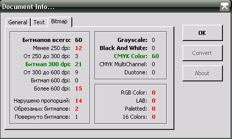
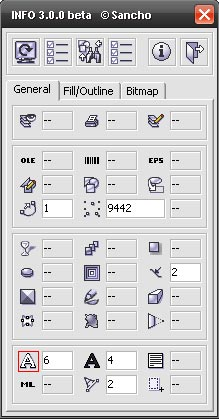
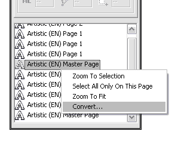
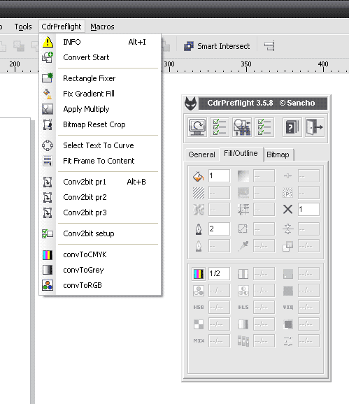

CdrPreflight, как это было?

Знаний VBA в то время было маловато, а вот идей было много. :D
Было и много ошибок в работе макроса - на ошибках, как известно, учатся. :) Но время не стояло на месте и работа над макросом тоже, и уже 26 апреля 2007 вышла новая версия. Было добавлено много новых параметров и конвертер.
В сентябре того же года вышла третья версия. Именно с этого момента макрос стал платным. Почему платным? Да всё банальное просто - хотелось вознаграждения за бессонные ночи, да и надо было на что то покупать пиво для этих ночей :D

Интерфейс претерпел значительные изменения. Функционал также не остался в стороне. Одним из значительных нововведений был модуль "ListView", тогда ещё работающий в отдельном окне. Для версии 3.1.0 была даже выпущена триал версия.
С этого времени макрос стал развиваться медленнее, по нескольким причинам. Главная - нехватка времени. Однако проект не был заброшен, и уже в январе 2008 года была новая версия, в которой модуль "ListView" был полностью интегрирован в основное окно.

Также был полностью переработан алгоритм работы конвертера, добавлены пресеты, сделано много значительных изменений.
Отсутствие времени и небольшого кол-ва пользователей макроса не повлияли на развитие макроса. И в июле 2008 вышла версия 3.5.8. С этих пор макрос стал называться CdrPreflight, было добавлено несколько полезных бонусов.

В версии 3.5.9 был полностью переписан код конвертера, была оптимизирована большая часть кода.
В августе 2008 наконец то дошли руки до официального хелпа по макросу. :)
В мае 2009 года был переписан код отвечающий за вывод информации в основном окне. Была добавлена возможность создавать и использовать пресеты для проверки документа.

Что будет дальше? :)
CdrPreflight